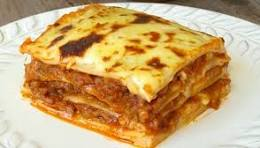

Inicio
Lasaña

Ingredientes e Instrucciones
La lasaña (o lasagna) es un plato de la gastronomía italiana que consiste en capas de láminas de pasta intercaladas con carne, salsas y queso, cocinadas al horno.
Ingredientes
- Carne molida
- Queso
- Fideo o tallarin en capas
Instrucciones
- En un bowl agrega una capa de Fideo en capas luego intercala entre queso, fideo, carne molida
- Luego de esto, agrega al horno y dejalo por 30 min a 180ºC
- Retira del horno y sirvelo a tu gusto.